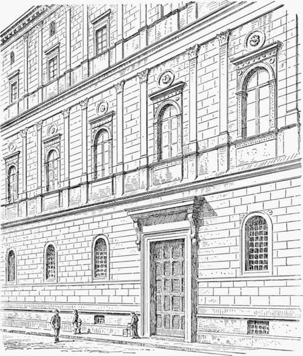
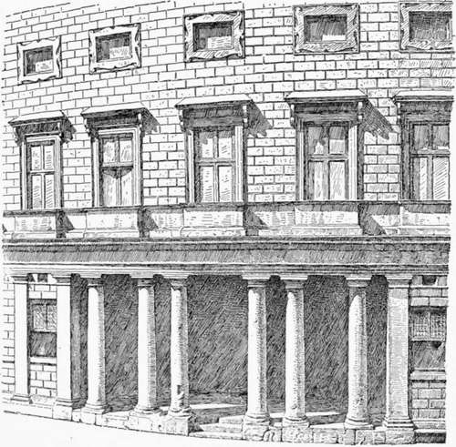

Chapter VII. Palace Architecture Of The Roman Renaissance
Description
This section is from the book "Character Of Renaissance Architecture", by Charles Herbert Moore. Also available from Amazon: Character of Renaissance Architecture.
Chapter VII. Palace Architecture Of The Roman Renaissance
Among the first of the great Roman palatial houses of the Renaissance is the so-called Cancelleria, which together with the Palazzo Girand Torlonia of similar design, has been attributed to Bramante. The building is believed, however, to have been begun before Bramante had settled in Rome, but it is not impossible that he may have had a hand in its design and construction at a later time while he was at work on the church of St. Peter. Some ground for belief in his authorship of the facade is found in some of its leading features which resemble, on the one hand, those which are characteristic of the early Renaissance architecture of the north of Italy, where Bramante received his early training, and on the other, the work of Alberti under whose influence it is reasonable to suppose that he had come while in Mantua. The north Italian features1 are the windows of the principal story (Fig. 61), which are undivided and flanked with pilasters carrying archivolts surmounted with cornices on panelled spandrels, and the disks in the wall over the windows, while the features bearing likeness to the work of Alberti are the orders of pilasters applied to the walls, as in the Rucellai of Florence. But Bramante, if this be his design, has gone a step farther in conformity with the Roman antique in introducing a podium beneath each order, as in the Flavian Amphitheatre. He has also extended Alberti's arrangement of the pilasters of the clerestory of Santa Maria Novella, setting them in pairs across the whole front instead of spacing them equally. He thus established a mode of treatment that was afterwards extensively followed, with many variations, in palatial facades. Among Renaissance innovations in the use of the orders this is one of the most marked. In ancient Greek usage the columns of an order were equally spaced, save in exceptional cases where the central intercolumniation is considerably widened to give a more ample passageway, as in the Propylaea at Athens. The Romans, in their triumphal arches, increased the width of the central space, but no other inequality of spacing is common in ancient art.
1 Cf. p. 144.
Fig. 61.— Facade of the Cancelleria, Runie.
The fagade of the Cancelleria has a feature that is not common in Italian architecture, that of a slight advance of the wall at each end, so as to form projecting bays, as in the pavilions of the French Renaissance chateaux. The salience of these bays is very slight, however, and is hardly noticeable in a general front view. The scheme of the upper fagade resembles that of the Rucellai very strikingly, save in the points just noticed ; but the basement is different, having no order, its rusticated wall being unbroken except by the portals, of which there are two, and a series of small arched window openings. Only one of these portals belongs to the original design. This one, shown in the illustration, is of stately magnitude and fine proportions. Its jambs and lintel are profiled with severely classic mouldings, and it is crowned with a cornice on consoles with a frieze between it and the lintel. It is an amplification of Alberti's portals in the Rucellai, and is of almost Greek purity of design, though it differs from a Greek portal in the more pronounced character of its cornice, in the introduction of the frieze, in the greater development of the consoles, and in its vertical jambs, which in Greek design would incline inward. A comparison with the portal of the Erechtheum will illustrate the points of likeness and of difference. The other portal appears to be an interpolation of a later time. An order of Doric columns framing an arch is set against a double order of Doric pilasters, the whole supporting a balcony, and forming a scheme characteristic of the later Renaissance.
The court of the Cancelleria has an arcade of two vaulted stories. These arcades support the overhanging upper story and attic, both of which are embraced by a single order of pilasters not arranged in pairs, as in the external fagade, but evenly spaced.
In Rome as in Florence many of the great palaces are without engaged orders dividing the wall surfaces into bays. The Palazzo Massimi, for instance, the next one of importance, designed by Baldassare Peruzzi, and dating from the early part of the sixteenth century, has an order on the basement story only, while the wall above is unbroken even by string courses. In conformity with the line of the street on which it stands, the fagade of the Massimi is curved on plan. A wide recessed portico (Fig. 62) gives a reason for the introduction of a freestanding Doric order, and in continuation of this order, an order of engaged Doric pilasters is ranged along the basement wall on either side. Both columns and pilasters are here again placed in pairs, the narrow intervals being narrower than in the Cancelleria, and in the portico the interval on the axis, opposite the portal, is wider than the other wide ones, while at each end a column is necessarily paired with a pilaster. The plain wall of the upper stories is uniformly rusticated and smooth-faced. The windows of the principal story are framed with mouldings of quiet classic profiling, have simple cornices on consoles, and are ranged on a podium with a ressaut under each window.
Fig. 62. — Portico of the Massimi, Rome.
Above are two tiers of small oblong rectangular windows with cartouche frames. The details of this facade have great refinement, and show the influence of Alberti. The Roman Doric order of the portico has much simple beauty. The entasis of the columns is more moderate than is common in later Renaissance design, and the light falls on their rounded surfaces, as they stand relieved against the dark void of the porch, with admirable effect. The facade as a whole is monotonous, but it has an expression of architectural reserve that is worthy of * praise.
Continue to:
- prev: Palace Architecture Of The Florentine Renaissance. Continued
- Table of Contents
- next: Palace Architecture Of The Roman Renaissance. Part 2